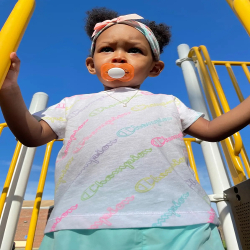
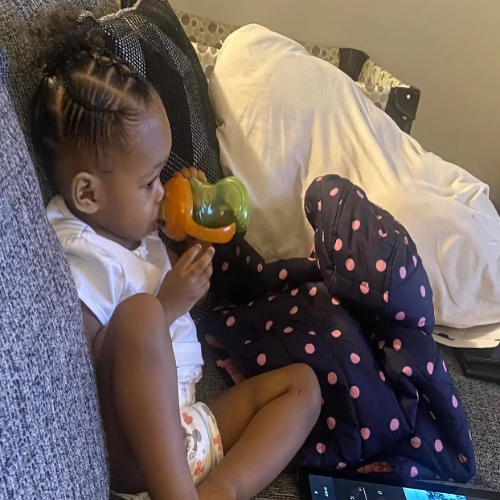

Journey
Children seem to be better teachers than most adults because we learn through awareness of their existence. I am a father of 1 beautiful girl, and since the day she was born, life has become new all over again. Things I used to take for granted everyday are now so much more meaningful. It’s honestly beautiful to see her grow more into her own individual. My favorite part of the day is after work and college assignments are done is eating snacks and playing roblox with her. She is my biggest motivation, and the reason I don't give up.
 
Being A Dad Helps Me By
Key Father Goals
A key goal is to model a positive example for children. The aim is to embody the values and behaviors parents want to see in their children, demonstrating respect, kindness, and resilience in interactions with others and when handling challenges. Being consistently present and engaged in their lives is important, showing children that their presence and development are valued. Whether reading together, playing games, or having a meaningful conversation, parents prioritize quality time to build a strong foundation of trust and connection.